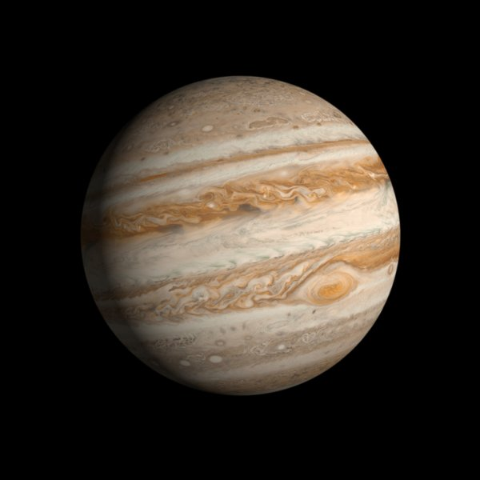

Jupiter
Date of Discovery:
Unknown
Discovered By:
Known by the Ancients
Average Oribit Distance:
483,638,564 miles
Mean Orbit Velocity:
29,205 mph
Orbit Eccentricity:
0.04838624
Equatorial Inclination:
3.1 degrees
Equatorial Radius:
43,440.7 miles
Equatorial Circumference:
272,954.9 miles
Volume:
343,382,767,518,322 miles cubed
Surface Area:
23,713,907,537 square miles
Surface Gravity:
81.3 ft/s squared
Escape Velocity:
134,664 mph
Atmospheric Constituents:
Hydrogen, Helium